◆「7周年記念 Archetype:Earth Pick Up召喚」期間◆
期間:2022年7月31日(日) 17:30～8月10日(三) 11:59
為了記念「Fate/Grand Order」7周年，新登場的期間限定從者「★5(SSR)Archetype:Earth」與期間限定概念禮裝3種Pick Up！
並且，同樣是新登場從者的「★3(R)徐福」Pick Up外，今後追加到故事召喚的「★5(SSR)熾天の王」與「★4(SR)狩人の夢」也先行登場！
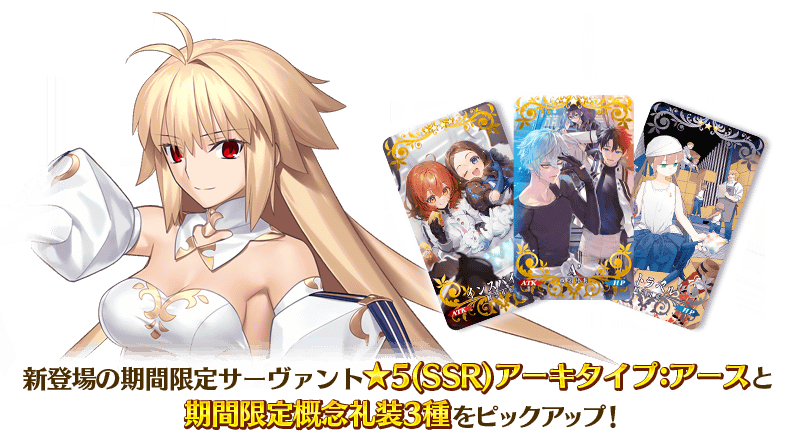
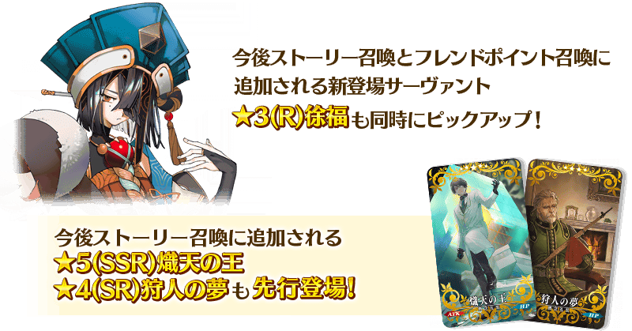
【Pick Up對象】
▼期間限定從者
・★5(SSR)Archetype:Earth
▼先行登場永久從者
・★3(R)徐福
▼期間限定概念禮裝
・★5(SSR)Ａ’
・★4(SR)インスパイア
・★3(R)リトラベル
Pick Up期間中，Pick Up對象從者與期間限定概念禮裝的出現機率提升！
詳情請在聖晶石召喚畫面左下的召喚詳細確認。
並且，今後追加到故事召喚的2種概念禮裝先行登場外，★4(SR)概念禮裝的一部份陣容翻新！
▼先行登場永久概念禮裝
・★5(SSR)熾天の王
・★4(SR)狩人の夢
11次召喚中確定1張★4(SR)以上和確定1位★3(R)以上的從者！ ※確定★4(SR)以上包含從者和概念禮裝。 ※本頁面皆為開發中圖片。會有與實際圖片相異的情況。
【重要】
◆關於「確定召喚」功能◆
・期間限定Pick Up召喚中，在329次以內未召喚到Pick Up對象★5(SSR)從者情況，只限1次可在進行第330次的召喚時「確定召喚」必定1位Pick Up對象★5(SSR)從者。
・在同時間舉辦多個期間限定Pick Up召喚的情況，各召喚分別(每個召喚畫面頁面)計算召喚次數。另外，以每日交替Pick Up召喚的內容切換情況，各自分別計算召喚次數。舉例，每天23:00時間點變更召喚內容的Pick Up召喚情況，請注意在召喚內容變更的時間點會重置召喚次數的計算。
・請注意期間限定Pick Up召喚中滿足以下任何條件的話，在召喚畫面會顯示「Pick Up對象確定召喚已結束。(ピックアップ対象の確定召喚は終了しました。)」，該召喚中「確定召喚」功能變成無效。
・第329次前召喚到Pick Up對象★5(SSR)從者
・在第330次確定召喚到Pick Up對象★5(SSR)從者
・召喚次數在期間限定Pick Up召喚中用有償聖晶石、無償聖晶石、呼符進行召喚時都會計算。目前的召喚履歴可於該召喚畫面內確認。
※每10次召喚進行的「＋1次獎勵召喚」與用有償聖晶石進行的1天1次限定「1次召喚」也在計算的對象。
※每個召喚內容會分開計算「＋1次獎勵召喚」與1日1次限定的「1次召喚」。請注意在變更召喚內容那天的23:00，「＋1次獎勵召喚」和「1次召喚」的計算會被重置。
※透過有償聖晶石1個「1次召喚」的計算，也會在每天3:00重置。
・在進行11次召喚時滿足「確定召喚」功能條件的情況，在施行11次召喚中會確定召喚1位Pick Up對象★5(SSR)從者。屆時，11次召喚中保障的確定1張★4(SR)以上與確定1位★3(R)以上的從者會另外生效。
・期間限定Pick Up召喚結束後，無法繼承召喚次數到別的召喚。
・故事召喚、友情點數召喚為「確定召喚」功能的對象外。
◆關於1天1次限定的有償聖晶石召喚◆
※可以1天1次限定於期間限定召喚用有償聖晶石1個進行「1回召喚」。
※透過有償聖晶石1個的「1次召喚」，每天3:00重置。
※透過有償聖晶石1個的「1次召喚」對應的聖晶石召喚有好幾個的情況，各個召喚中1天各進行1次有償聖晶石1個的「1次召喚」。
※請注意就算進行透過有償聖晶石1個的「1次召喚」，不包含在1次獎勵的計算。
※聖晶石購入時賦予的「附贈(オマケ)」是做為無償聖晶石而不包含在有償聖晶石的個數，請注意別搞錯。另外，持有聖晶石的細項，可從持有道具一覧確認。
◆關於透過召喚獲得從者硬幣◆
在期間限定召喚、故事召喚、友情點數召喚中入手從者時，可獲得該從者的從者硬幣。
◆有關從者的注意◆
※下述的從者在Pick Up期間結束後不會追加到故事召喚。
・★5(SSR)Archetype:Earth
※下述的從者自本召喚的舉辦期間結束後，追加到故事召喚及友情點數召喚。
・★3(R)徐福
◆有關概念禮裝的注意◆
※下述的概念禮裝的出現機率不會提升。
・★5(SSR)熾天の王
・★4(SR)狩人の夢
※下述的概念禮裝自本召喚的舉辦期間結束後，追加到故事召喚。
・★5(SSR)熾天の王
・★4(SR)狩人の夢
※隨著翻新，下述的概念禮裝於本召喚為召喚對象外。
・★4(SR)騎士の矜持
※本召喚的舉辦期間結束後，下述的概念禮裝變得不會從故事召喚被抽出。
・★4(SR)騎士の矜持
※就算本召喚的舉辦期間結束後，下述的概念禮裝也會自教學召喚被抽出。
・★4(SR)騎士の矜持
※下述的概念禮裝，Pick Up期間中也能靠友情點數召喚獲得。
・★3(R)リトラベル
※在自動變還設定登錄★3(R)概念禮裝的情況，下述的概念禮裝會變成自動變還的對象。
・★3(R)リトラベル
期間限定從者
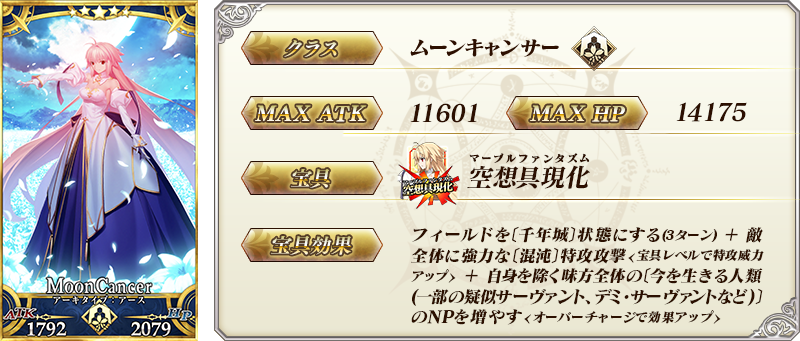
◆關於透過「★5(SSR)Archetype:Earth」寶具效果變化場地◆
使用「★5(SSR)Archetype：Earth」寶具的話場地變成〔千年城〕，戰鬥背景與BGM會變化。
場地的變化，會隨著經過回合後結束效果，或使用寶具後場地變化持續到「★5(SSR)Archetype:Earth」變得無法戰鬥。
※一部份的戰鬥中會有戰鬥背景或BGM無法變化的情況。 ※就算場地變化的效果仍然持續的狀態，在切換Wave時會回到原本的戰鬥背景與BGM。
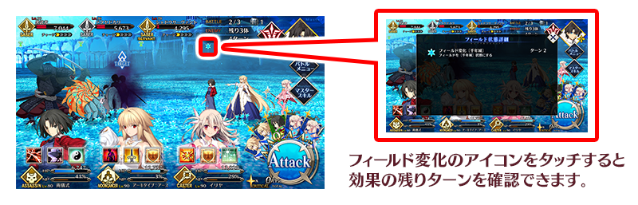先行登場常駐從者
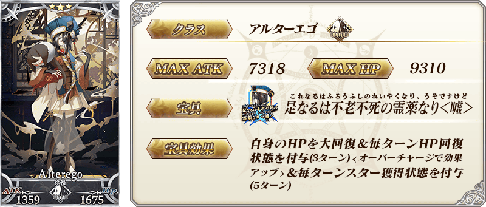
期間限定概念禮裝
| 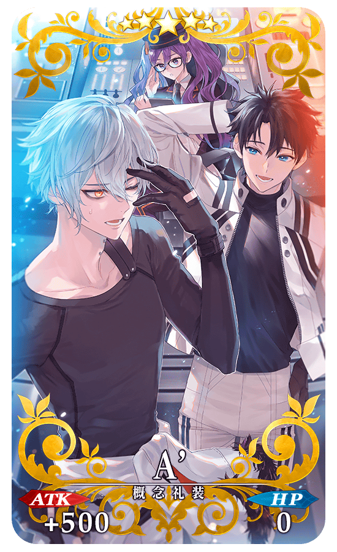 |
★★★★★SSR
◆最大解放時效果◆ |
| 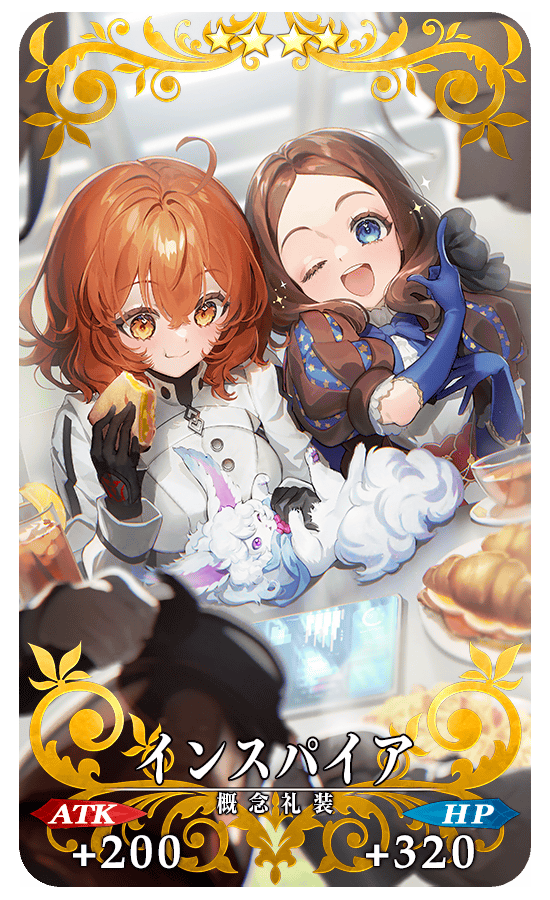 |
★★★★SR
◆最大解放時效果◆ |
| 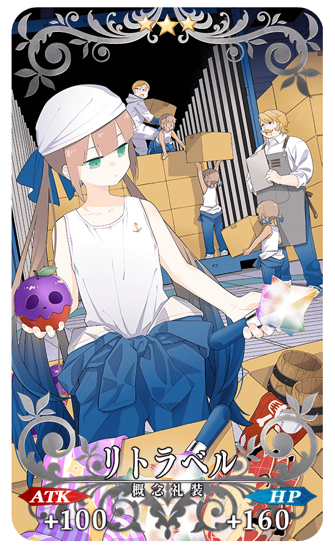 |
★★★R
◆最大解放時效果◆ |
| 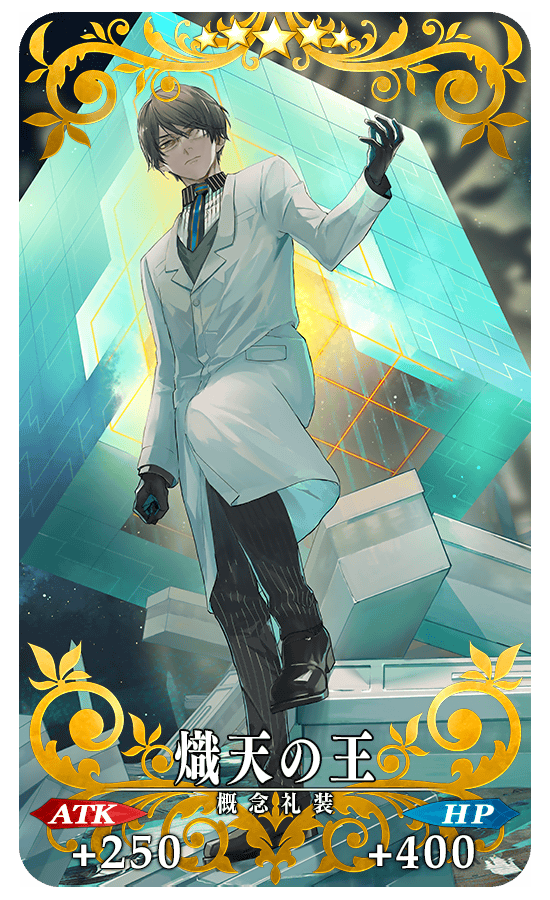 |
★★★★★SSR
◆最大解放時效果◆ |
| 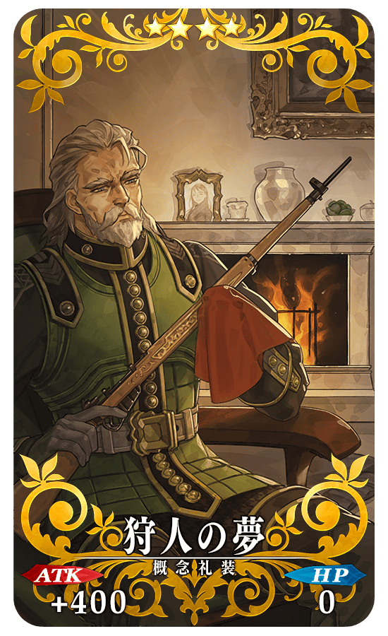 |
★★★★SR
◆最大解放時效果◆ |
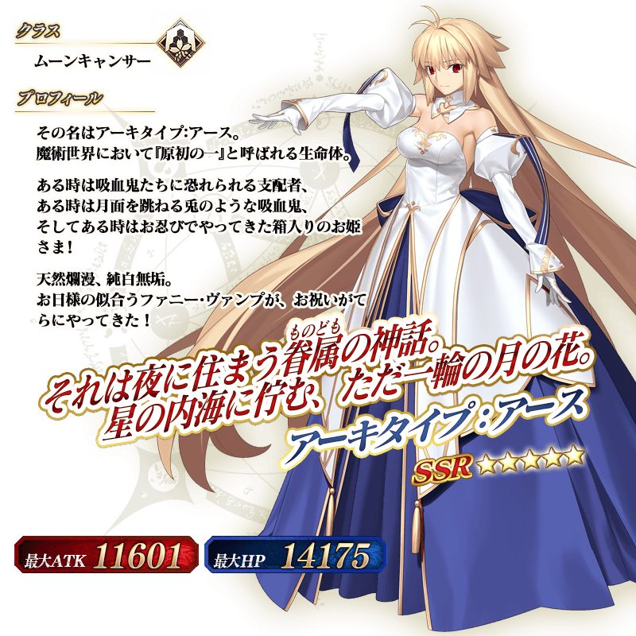
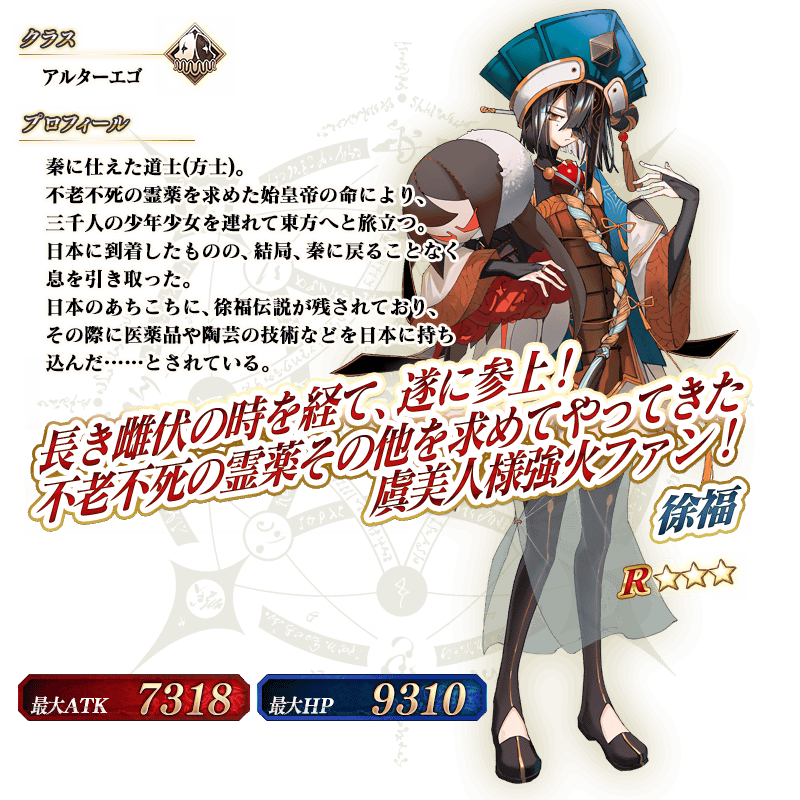
介紹新登場從者「★5(SSR)Archetype:Earth」與「★3(R)徐福」的寶具演出！
※「★5(SSR)Archetype:Earth」的寶具會根據再臨階段變化演出。
【★5(SSR)Archetype:Earth】
【★3(R)徐福】
以期間限定舉辦Archetype:Earth的體驗關卡！
可迎接「★5(SSR)Archetype:Earth」當支援成員，挑戰期間限定的關卡！
別錯過體驗從者技能和寶具的機會吧！
※請注意在Archetype:Earth的體驗關卡沒有文字冒險部份。
◆Archetype:Earth體驗關卡舉辦期間◆
2022年7月31日(日) 17:30～8月10日(三) 11:59
◆開放條件◆
滿足以下條件的御主才能參加
・通過「特異點F 炎上汙染都市 冬木」
◆關卡通過報酬◆
呼符 1張
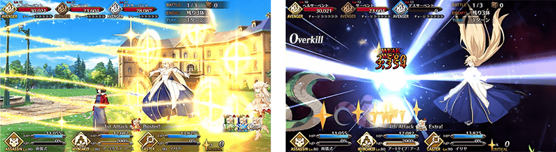
【8月3日(三) 17:00追記】
其他還有，
・Fate/Grand Order ～7th Anniversary～
・7周年記念福袋召喚(職階別20劃分)
・7周年記念限定從者每日交替Pick Up召喚
以期間限定舉辦中！
關於詳情，請自下述橫幅確認。
■「Fate/Grand Order ～7th Anniversary～」詳細情報

■「7周年記念福袋召喚(職階別20劃分)」詳細情報

■「7周年記念限定從者每日交替Pick Up召喚」詳細情報